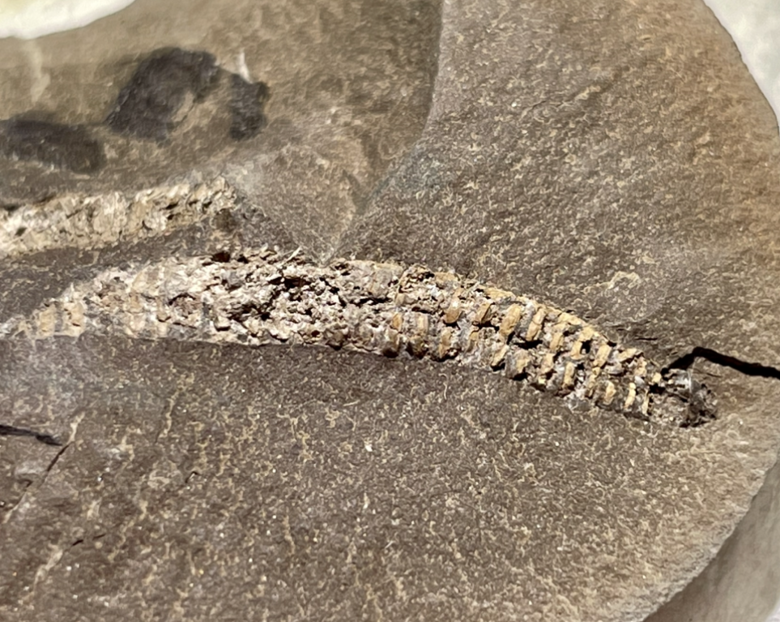
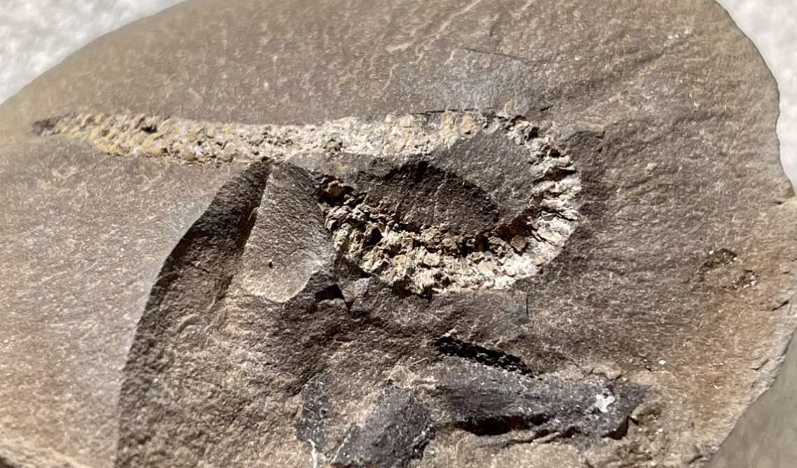
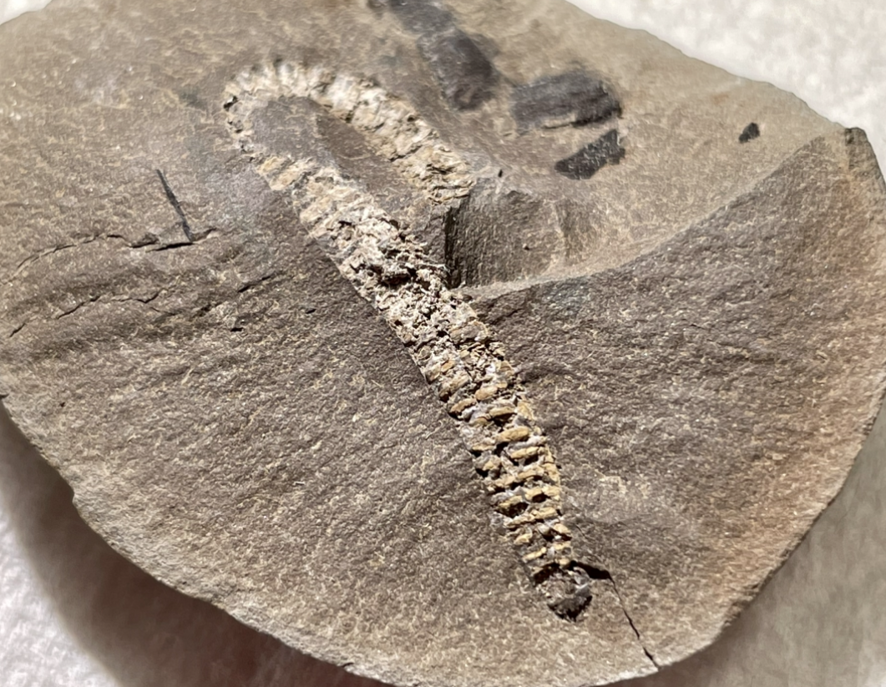
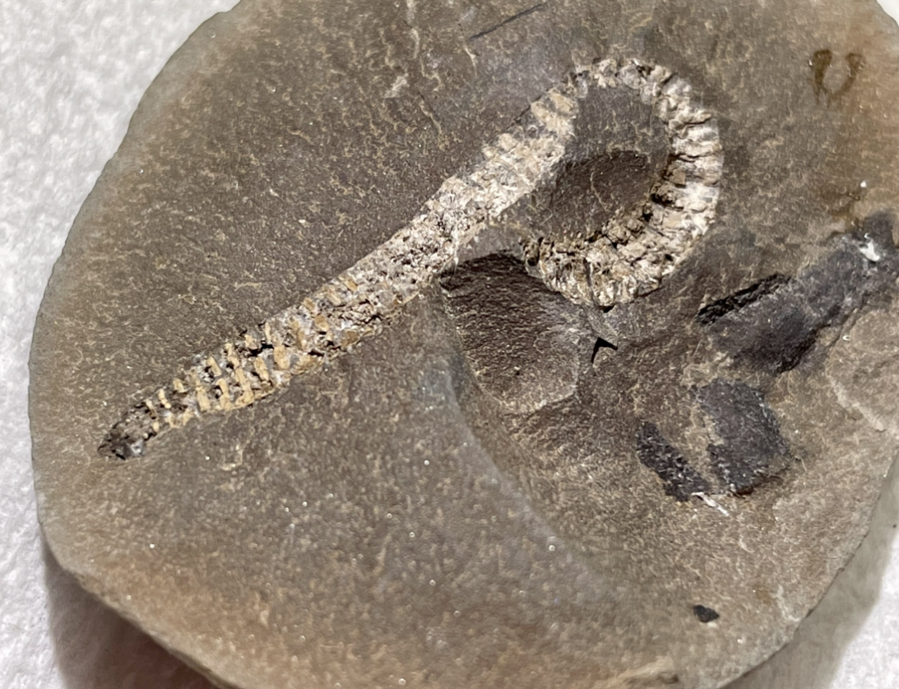
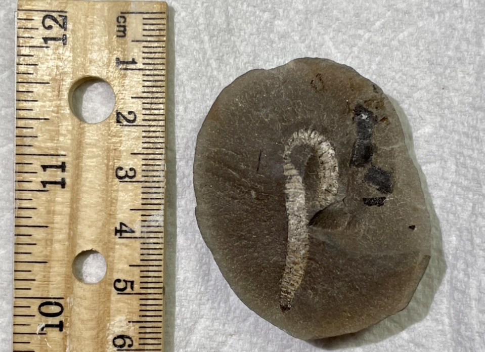
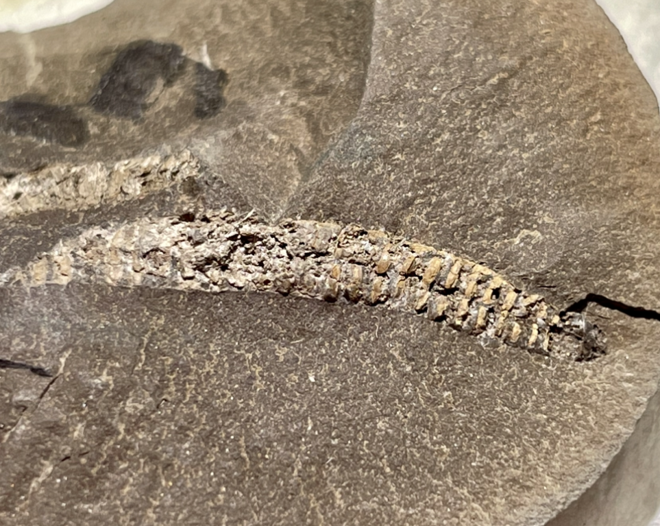
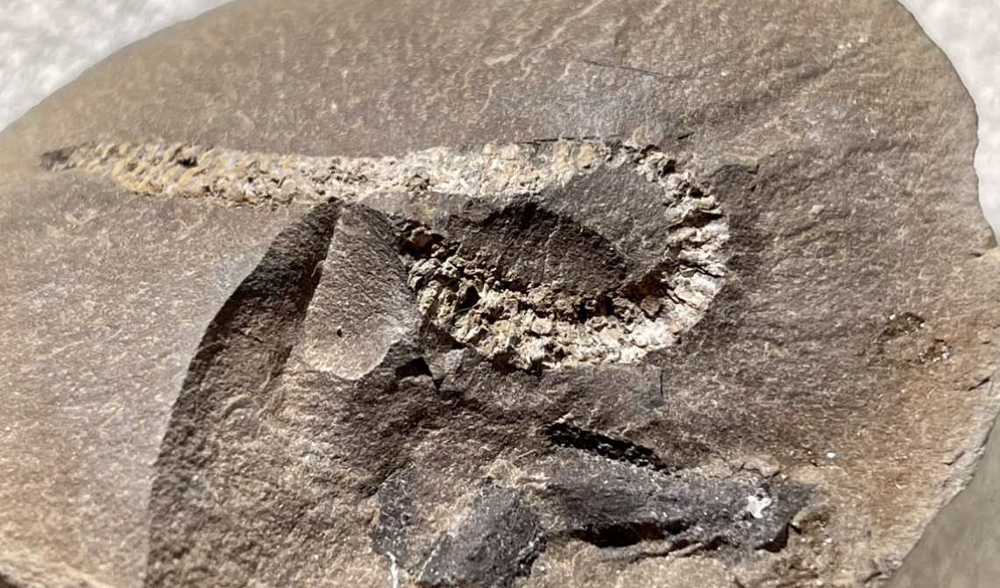
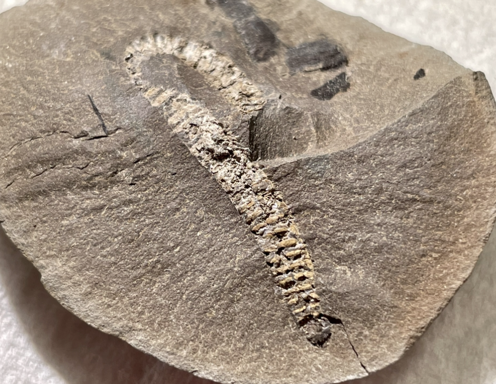
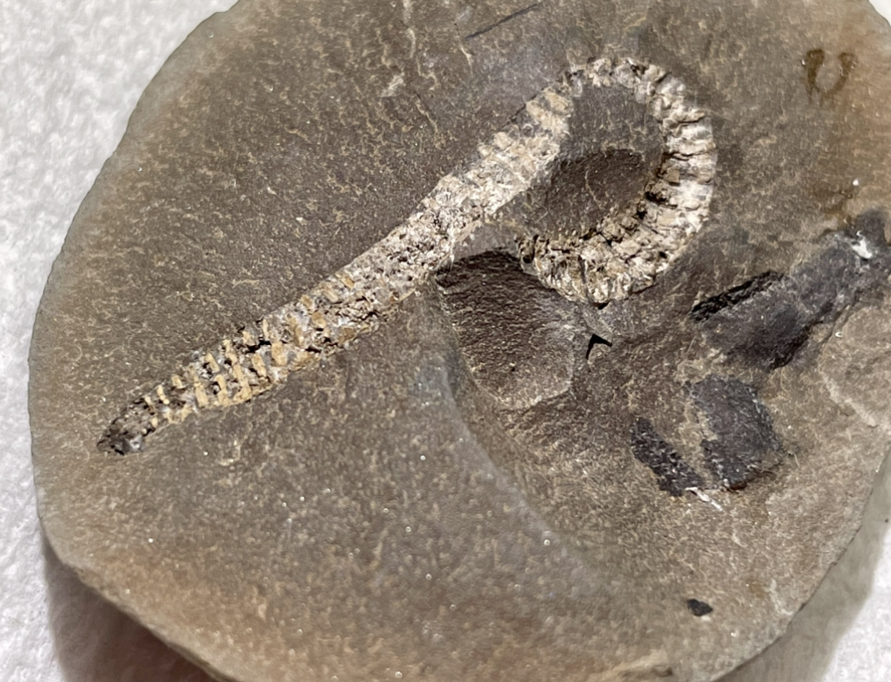
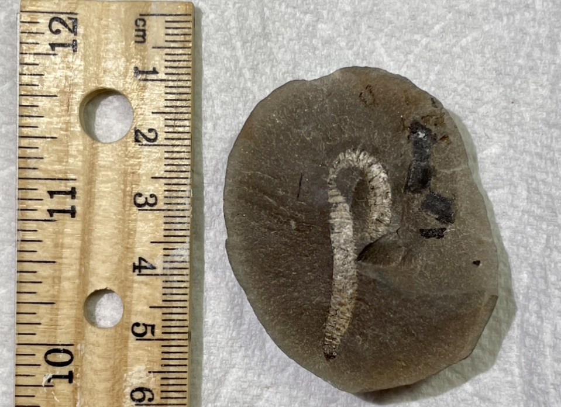

Arthropod
Xyloiulus sp.
• Pennsylvanian
• Francis Creek Shale, Carbondale Formation
• Mazon Creek, Illinois
Size: 3.5 cm not considering the curve
PRICE: $250 SOLD
Here is a very special fossil: a millipede from the famous Mazon Creek Lagerstatte of Illinois (Francis Creek Shale). I myself know very little about mazon creek fossils, but the identification as Xyloiulus sp. was provided by Jack Wittry of the Field Museum of Natural History in Chicago. He is a Mazon Creek expert who wrote the books "The Mazon Creek Fossil Fauna" and "The Mazon Creek Fossil Flora", which are regarded as comprehensive taxonomic guides for fossils from this locality.
Supposedly Xyloiulus is an especially rare genus even among the rare mazon creek millipedes; characterized by short legs and vertically undivided body segments. I have also been told by a couple knowledgeable collectors that the specimen bears some resemblance to the genus Euphoberia.
The specimen itself shows clear segmentation, beautiful 3-dimensional preservation in parts, and even the proximal portions of some its legs which could perhaps be further prepped out. That being said, I have never seen a mazon creek Xyloiulus for sale before, so I don't have the best frame of reference.
 
